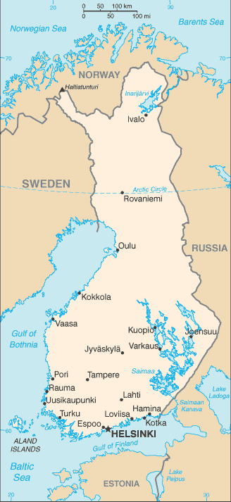
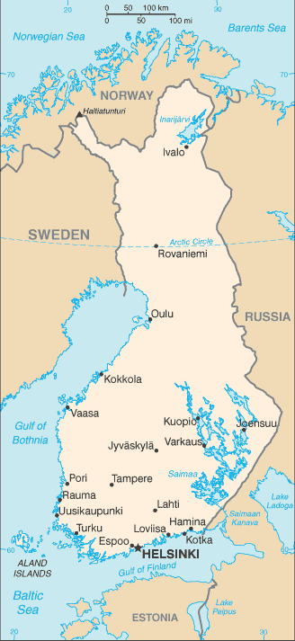

Europe :: FINLAND
Introduction :: FINLAND
-
Finland was a province and then a grand duchy under Sweden from the 12th to the 19th centuries, and an autonomous grand duchy of Russia after 1809. It gained complete independence in 1917. During World War II, Finland successfully defended its independence through cooperation with Germany and resisted subsequent invasions by the Soviet Union - albeit with some loss of territory. In the subsequent half century, Finland transformed from a farm/forest economy to a diversified modern industrial economy; per capita income is among the highest in Western Europe. A member of the EU since 1995, Finland was the only Nordic state to join the euro single currency at its initiation in January 1999. In the 21st century, the key features of Finland's modern welfare state are high quality education, promotion of equality, and a national social welfare system - currently challenged by an aging population and the fluctuations of an export-driven economy.
Geography :: FINLAND
-
Northern Europe, bordering the Baltic Sea, Gulf of Bothnia, and Gulf of Finland, between Sweden and Russia64 00 N, 26 00 EEuropetotal: 338,145 sq kmland: 303,815 sq kmwater: 34,330 sq kmcountry comparison to the world: 66slightly more than two times the size of Georgia; slightly smaller than Montanatotal: 2,563 kmborder countries (3): Norway 709 km, Sweden 545 km, Russia 1,309 km1,250 kmterritorial sea: 12 nm (in the Gulf of Finland - 3 nm)contiguous zone: 24 nmexclusive fishing zone: 12 nm; extends to continental shelf boundary with Sweden, Estonia, and Russiacontinental shelf: 200 m depth or to the depth of exploitationcold temperate; potentially subarctic but comparatively mild because of moderating influence of the North Atlantic Current, Baltic Sea, and more than 60,000 lakesmostly low, flat to rolling plains interspersed with lakes and low hillsmean elevation: 164 melevation extremes: lowest point: Baltic Sea 0 mhighest point: Halti (alternatively Haltia, Haltitunturi, Haltiatunturi) 1,328 mtimber, iron ore, copper, lead, zinc, chromite, nickel, gold, silver, limestoneagricultural land: 7.5%arable land 7.4%; permanent crops 0%; permanent pasture 0.1%forest: 72.9%other: 19.6% (2011 est.)690 sq km (2012)the vast majority of people are found in the south; the northern interior areas remain sparsely populatedsevere winters in the northair pollution from manufacturing and power plants contributing to acid rain; water pollution from industrial wastes, agricultural chemicals; habitat loss threatens wildlife populationsparty to: Air Pollution, Air Pollution-Nitrogen Oxides, Air Pollution-Persistent Organic Pollutants, Air Pollution-Sulfur 85, Air Pollution-Sulfur 94, Air Pollution-Volatile Organic Compounds, Antarctic-Environmental Protocol, Antarctic-Marine Living Resources, Antarctic Treaty, Biodiversity, Climate Change, Climate Change-Kyoto Protocol, Desertification, Endangered Species, Environmental Modification, Hazardous Wastes, Law of the Sea, Marine Dumping, Marine Life Conservation, Ozone Layer Protection, Ship Pollution, Tropical Timber 83, Tropical Timber 94, Wetlands, Whalingsigned, but not ratified: none of the selected agreementslong boundary with Russia; Helsinki is northernmost national capital on European continent; population concentrated on small southwestern coastal plain
People and Society :: FINLAND
-
5,518,371 (July 2017 est.)country comparison to the world: 117noun: Finn(s)adjective: FinnishFinn 93.4%, Swede 5.6%, Russian 0.5%, Estonian 0.3%, Romani 0.1%, Sami 0.1% (2006)Finnish (official) 88.3%, Swedish (official) 5.3%, Russian 1.4%, other 5% (2016 est.)Lutheran 72%, Orthodox 1.1%, other 1.6%, unspecified 25.3% (2016 est.)0-14 years: 16.43% (male 463,432/female 443,384)15-24 years: 11.4% (male 321,609/female 307,458)25-54 years: 37.78% (male 1,064,427/female 1,020,285)55-64 years: 13.29% (male 360,821/female 372,794)65 years and over: 21.1% (male 506,342/female 657,819) (2017 est.)total dependency ratio: 57.9youth dependency ratio: 25.9elderly dependency ratio: 32potential support ratio: 3.1 (2015 est.)total: 42.5 yearsmale: 40.9 yearsfemale: 44.3 years (2017 est.)country comparison to the world: 250.36% (2017 est.)country comparison to the world: 16210.7 births/1,000 population (2017 est.)country comparison to the world: 18510 deaths/1,000 population (2017 est.)country comparison to the world: 402.9 migrant(s)/1,000 population (2017 est.)country comparison to the world: 36the vast majority of people are found in the south; the northern interior areas remain sparsely poplulatedurban population: 84.5% of total population (2017)rate of urbanization: 0.46% annual rate of change (2015-20 est.)HELSINKI (capital) 1.18 million (2015)at birth: 1.05 male(s)/female0-14 years: 1.05 male(s)/female15-24 years: 1.04 male(s)/female25-54 years: 1.04 male(s)/female55-64 years: 0.97 male(s)/female65 years and over: 0.76 male(s)/femaletotal population: 0.97 male(s)/female (2016 est.)28.8 years (2015 est.)3 deaths/100,000 live births (2015 est.)country comparison to the world: 181total: 2.5 deaths/1,000 live birthsmale: 2.7 deaths/1,000 live birthsfemale: 2.4 deaths/1,000 live births (2017 est.)country comparison to the world: 220total population: 81 yearsmale: 78 yearsfemale: 84.1 years (2017 est.)country comparison to the world: 311.75 children born/woman (2017 est.)country comparison to the world: 1629.7% of GDP (2014)country comparison to the world: 293.01 physicians/1,000 population (2013)4.53 beds/1,000 population (2014)improved:urban: 100% of populationrural: 100% of populationtotal: 100% of populationunimproved:urban: 0% of populationrural: 0% of populationtotal: 0% of population (2015 est.)improved:urban: 99.4% of populationrural: 88% of populationtotal: 97.6% of populationunimproved:urban: 0.6% of populationrural: 12% of populationtotal: 2.4% of population (2015 est.)NANANA22.2% (2016)country comparison to the world: 807.2% of GDP (2013)country comparison to the world: 27total: 19 yearsmale: 19 yearsfemale: 20 years (2015)total: 22.5%male: 25.4%female: 19.7% (2015 est.)country comparison to the world: 65
Government :: FINLAND
-
conventional long form: Republic of Finlandconventional short form: Finlandlocal long form: Suomen tasavalta/Republiken Finlandlocal short form: Suomi/Finlandetymology: name may derive from the ancient Fenni peoples who are first described as living in northeastern Europe in the first centuries A.D.parliamentary republicname: Helsinkigeographic coordinates: 60 10 N, 24 56 Etime difference: UTC+2 (7 hours ahead of Washington, DC, during Standard Time)daylight saving time: +1hr, begins last Sunday in March; ends last Sunday in October19 regions (maakunnat, singular - maakunta (Finnish); landskapen, singular - landskapet (Swedish)); Aland (Swedish), Ahvenanmaa (Finnish); Etela-Karjala (Finnish), Sodra Karelen (Swedish) [South Karelia]; Etela-Pohjanmaa (Finnish), Sodra Osterbotten (Swedish) [South Ostrobothnia]; Etela-Savo (Finnish), Sodra Savolax (Swedish) [South Savo]; Kanta-Hame (Finnish), Egentliga Tavastland (Swedish); Kainuu (Finnish), Kajanaland (Swedish); Keski-Pohjanmaa (Finnish), Mellersta Osterbotten (Swedish) [Central Ostrobothnia]; Keski-Suomi (Finnish), Mellersta Finland (Swedish) [Central Finland]; Kymenlaakso (Finnish), Kymmenedalen (Swedish); Lappi (Finnish), Lappland (Swedish); Paijat-Hame (Finnish), Paijanne-Tavastland (Swedish); Pirkanmaa (Finnish), Birkaland (Swedish) [Tampere]; Pohjanmaa (Finnish), Osterbotten (Swedish) [Ostrobothnia]; Pohjois-Karjala (Finnish), Norra Karelen (Swedish) [North Karelia]; Pohjois-Pohjanmaa (Finnish), Norra Osterbotten (Swedish) [North Ostrobothnia]; Pohjois-Savo (Finnish), Norra Savolax (Swedish) [North Savo]; Satakunta (Finnish and Swedish); Uusimaa (Finnish), Nyland (Swedish) [Newland]; Varsinais-Suomi (Finnish), Egentliga Finland (Swedish) [Southwest Finland]6 December 1917 (from Russia)Independence Day, 6 December (1917)history: previous 1906, 1919; latest drafted 17 June 1997, approved by Parliament 11 June 1999, entered into force 1 March 2000amendments: proposed by Parliament; passage normally requires simple majority vote in two readings in the first parliamentary session and at least two-thirds majority vote in a single reading by the newly elected Parliament; proposals declared “urgent” by five-sixths of Parliament members can be passed by at least two-thirds majority vote in the first parliamentary session only; amended several times, last in 2012 (2016)civil law system based on the Swedish modelaccepts compulsory ICJ jurisdiction with reservations; accepts ICCt jurisdictioncitizenship by birth: nocitizenship by descent only: at least one parent must be a citizen of Finlanddual citizenship recognized: yesresidency requirement for naturalization: 6 years18 years of age; universalchief of state: President Sauli NIINISTO (since 1 March 2012)head of government: Prime Minister Juha SIPILA (since 28 May 2015)cabinet: Council of State or Valtioneuvosto appointed by the president, responsible to Parliamentelections/appointments: president directly elected by absolute majority popular vote in 2 rounds if needed for a 6-year term (eligible for a second term); election last held on 22 January 2012 and 5 February 2012 (next to be held in February 2018); prime minister appointed by Parliament in 2015election results: percent of vote in first round - Sauli NIINISTO (Kok) 37%, Pekka HAAVISTO (Vihr) 18.8%, Paavo VAYRYNEN (Kesk) 17.5%, Timo SOINI (TF) 9.4%, Paavo LIPPONEN (SDP) 6.7%, Paavo ARHINMAKI (Vas) 5.5%, Eva BIAUDET (SFP) 2.7%, Sari ESSAYAH (KD) 2.5%; Sauli NIINISTO elected president in second round; percent of vote - NIINISTO 62.6%, HAAVISTO 37.4%; Juha SIPILA appointed prime ministerdescription: unicameral Parliament or Eduskunta (200 seats; 199 members directly elected in single- and multi-seat constituencies by proportional representation vote and 1 member in the province of Aland directly elected by simple majority vote; members serve 4-year terms)elections: last held on 19 April 2015 (next to be held by April 2019)election results: percent of vote by party/coalition - Kesk 21.1%, PS 17.6%, Kok 18.2%, SDP 16.5%, Vihr 8.5%, Vas 7.1%, SFP 4.9%, KD 3.5%, other 2.6%; seats by party/coalition - Kesk 49, PS 38, Kok 37, SDP 34, Vihr 15, Vas 12, SFP 9, KD 5, Aland Coalition 1highest court(s): Supreme Court or Korkein Oikeus (consists of the court president and 18 judges); Supreme Administrative Court (consists of 21 judges including the court president and organized into 3 chambers); note - Finland has a dual judicial system - courts with civil and criminal jurisdiction and administrative courts with jurisdiction for litigation between individuals and administrative organs of the state and communitiesjudge selection and term of office: Supreme Court and Supreme Administrative Court judges appointed by the president of the republic; judges serve until mandatory retirement at age 65subordinate courts: 6 Courts of Appeal; 8 regional administrative courts; 27 district courts; special courts for issues relating to markets, labor, insurance, impeachment, land, tenancy, and water rightsAland Coalition (a coalition of several political parties on the Aland Islands)Center Party or Kesk [Juha SIPILA]Christian Democrats or KD [Sari ESSAYAH]Finns Party or PS [Jussi HALLA-AHO]Green League or Vihr [Ville NIINISTO]Left Alliance or Vas [Li ANDERSSON]]National Coalition Party or Kok [Petteri ORPO]Social Democratic Party or SDP [Antti RINNE]Swedish People's Party or SFP [Anna-Maja HENRIKSSON]ADB (nonregional member), AfDB (nonregional member), Arctic Council, Australia Group, BIS, CBSS, CD, CE, CERN, EAPC, EBRD, ECB, EIB, EITI (implementing country), EMU, ESA, EU, FAO, FATF, G-9, IADB, IAEA, IBRD, ICAO, ICC (national committees), ICCt, ICRM, IDA, IEA, IFAD, IFC, IFRCS, IHO, ILO, IMF, IMO, IMSO, Interpol, IOC, IOM, IPU, ISO, ITSO, ITU, ITUC (NGOs), MIGA, MINUSMA, NC, NEA, NIB, NSG, OAS (observer), OECD, OPCW, OSCE, Pacific Alliance (observer), Paris Club, PCA, PFP, Schengen Convention, UN, UNCTAD, UNESCO, UNHCR, UNIDO, UNIFIL, UNMIL, UNMOGIP, UNRWA, UNTSO, UPU, WCO, WFTU (NGOs), WHO, WIPO, WMO, WTO, ZCchief of mission: Ambassador Kirsti KAUPPI (since 17 September 2015)chancery: 3301 Massachusetts Avenue NW, Washington, DC 20008telephone: [1] (202) 298-5800FAX: [1] (202) 298-6030consulate(s) general: Los Angeles, New Yorkchief of mission: Ambassador (vacant); Charge d'Affaires Donna Ann WELTON (since 20 January 2017)embassy: Itainen Puistotie 14B, 00140 Helsinkimailing address: APO AE 09723telephone: [358] (9) 616250FAX: [358] (9) 6162 5800white with a blue cross extending to the edges of the flag; the vertical part of the cross is shifted to the hoist side in the style of the Dannebrog (Danish flag); the blue represents the thousands of lakes scattered across the country, while the white is for the snow that covers the land in winterlion; national colors: blue, whitename: "Maamme" (Our Land)lyrics/music: Johan Ludvig RUNEBERG/Fredrik PACIUSnote: in use since 1848; although never officially adopted by law, the anthem has been popular since it was first sung by a student group in 1848; Estonia's anthem uses the same melody as that of Finland
Economy :: FINLAND
-
Finland has a highly industrialized, largely free-market economy with per capita GDP almost as high as that of Austria and the Netherlands and slightly above that of Germany and Belgium. Trade is important, with exports accounting for over one-third of GDP in recent years. The government is open to, and actively takes steps to attract, foreign direct investment.Finland is historically competitive in manufacturing - principally the wood, metals, engineering, telecommunications, and electronics industries. Finland excels in export of technology as well as promotion of startups in the information and communications technology, gaming, cleantech, and biotechnology sectors. Except for timber and several minerals, Finland depends on imports of raw materials, energy, and some components for manufactured goods. Because of the cold climate, agricultural development is limited to maintaining self-sufficiency in basic products. Forestry, an important export industry, provides a secondary occupation for the rural population.Finland had been one of the best performing economies within the EU before 2009 and its banks and financial markets avoided the worst of global financial crisis. However, the world slowdown hit exports and domestic demand hard in that year, causing Finland’s economy to contract from 2012 to 2014. The recession affected general government finances and the debt ratio. The economy returned to growth in 2015, posting a 0.3% GDP increase before growing 1.4% in 2016.Finland's main challenges will be reducing high labor costs and boosting demand for its exports. In June 2016, the government enacted a Competitiveness Pact aimed at reducing labor costs, increasing hours worked, and introducing more flexibility into the wage bargaining system. The Government was also seeking to reform the health care system and social services. In the long term, Finland must address a rapidly aging population and decreasing productivity in traditional industries that threaten competitiveness, fiscal sustainability, and economic growth.$231.9 billion (2016 est.)$224.6 billion (2015 est.)$222.3 billion (2014 est.)note: data are in 2016 dollarscountry comparison to the world: 63$238.6 billion (2016 est.)1.9% (2016 est.)0% (2015 est.)-0.6% (2014 est.)country comparison to the world: 164$42,300 (2016 est.)$41,600 (2015 est.)$41,700 (2014 est.)note: data are in 2016 dollarscountry comparison to the world: 4120.8% of GDP (2016 est.)20.3% of GDP (2015 est.)19.7% of GDP (2014 est.)country comparison to the world: 86household consumption: 55.2%government consumption: 24%investment in fixed capital: 21.5%investment in inventories: 0.5%exports of goods and services: 35.2%imports of goods and services: -36.5% (2016 est.)agriculture: 2.7%industry: 27.1%services: 70.2% (2016 est.)barley, wheat, sugar beets, potatoes; dairy cattle; fishmetals and metal products, electronics, machinery and scientific instruments, shipbuilding, pulp and paper, foodstuffs, chemicals, textiles, clothing2% (2016 est.)country comparison to the world: 1082.685 million (2016 est.)country comparison to the world: 111agriculture: 4.5%industry: 24%services: 71.5% (2014)8.8% (2016 est.)9.3% (2015 est.)country comparison to the world: 114NA%lowest 10%: 4.2%highest 10%: 21.5% (2015)21.5 (2015)26.8 (2008)country comparison to the world: 150revenues: $128.4 billionexpenditures: $133 billionnote: Central Government Budget (2016 est.)54.2% of GDP (2016 est.)country comparison to the world: 10-1.9% of GDP (2016 est.)country comparison to the world: 8863.6% of GDP (2016 est.)63.7% of GDP (2015 est.)note: data cover general government debt, and includes debt instruments issued (or owned) by government entities other than the treasury; the data include treasury debt held by foreign entities; the data include debt issued by subnational entities, as well as intra-governmental debt; intra-governmental debt consists of treasury borrowings from surpluses in the social funds, such as for retirement, medical care, and unemployment; debt instruments for the social funds are not sold at public auctionscountry comparison to the world: 64calendar year0.4% (2016 est.)-0.1% (2015 est.)country comparison to the world: 620.25% (31 December 2016)0.3% (31 December 2010)note: this is the European Central Bank's rate on the marginal lending facility, which offers overnight credit to banks in the euro areacountry comparison to the world: 1361.79% (31 December 2016 est.)2% (31 December 2015 est.)country comparison to the world: 180$124 billion (31 December 2016 est.)$121.4 billion (31 December 2015 est.)note: see entry for the European Union for money supply for the entire euro area; the European Central Bank (ECB) controls monetary policy for the 18 members of the Economic and Monetary Union (EMU); individual members of the EMU do not control the quantity of money circulating within their own borderscountry comparison to the world: 31$152.9 billion (31 December 2016 est.)$155.6 billion (31 December 2015 est.)country comparison to the world: 45$351.6 billion (31 December 2016 est.)$358 billion (31 December 2015 est.)country comparison to the world: 32$133.7 billion (31 December 2016 est.)$NA (31 December 2015 est.)$154.4 billion (31 December 2014 est.)country comparison to the world: 38$-2.534 billion (2016 est.)$-1.394 billion (2015 est.)country comparison to the world: 158$58.32 billion (2016 est.)$59.65 billion (2015 est.)country comparison to the world: 43electrical and optical equipment, machinery, transport equipment, paper and pulp, chemicals, basic metals; timberGermany 13.1%, Sweden 10.6%, US 7.6%, Netherlands 6.7%, Russia 5.7%, China 5.2%, UK 4.8% (2016)$57.66 billion (2016 est.)$57.48 billion (2015 est.)country comparison to the world: 45foodstuffs, petroleum and petroleum products, chemicals, transport equipment, iron and steel, machinery, computers, electronic industry products, textile yarn and fabrics, grainsGermany 16.9%, Sweden 16.1%, Russia 11.1%, Netherlands 8.6% (2016)$10.48 billion (31 December 2016 est.)$10.02 billion (31 December 2015 est.)country comparison to the world: 73$544.7 billion (31 March 2016 est.)$524.7 billion (31 March 2015 est.)country comparison to the world: 21$114.6 billion (31 December 2016 est.)$130.8 billion (31 December 2015 est.)country comparison to the world: 43$153.7 billion (31 December 2016 est.)$142.7 billion (31 December 2015 est.)country comparison to the world: 29euros (EUR) per US dollar -0.9214 (2016 est.)0.885 (2015 est.)0.885 (2014 est.)0.7634 (2013 est.)0.7752 (2012 est.)
Energy :: FINLAND
-
electrification - total population: 100% (2016)65.17 billion kWh (2015 est.)country comparison to the world: 4279.07 billion kWh (2015 est.)country comparison to the world: 373.159 billion kWh (2016 est.)country comparison to the world: 4222.11 billion kWh (2016 est.)country comparison to the world: 915.88 million kW (2015 est.)country comparison to the world: 5144.5% of total installed capacity (2015 est.)country comparison to the world: 16217.3% of total installed capacity (2015 est.)country comparison to the world: 1020.5% of total installed capacity (2015 est.)country comparison to the world: 8723.5% of total installed capacity (2015 est.)country comparison to the world: 250 bbl/day (2016 est.)country comparison to the world: 1340 bbl/day (2016 est.)country comparison to the world: 121220,400 bbl/day (2016 est.)country comparison to the world: 290 bbl (1 January 2017 es)country comparison to the world: 133303,600 bbl/day (2016 est.)country comparison to the world: 41200,700 bbl/day (2016 est.)country comparison to the world: 55167,200 bbl/day (2016 est.)country comparison to the world: 36147,600 bbl/day (2016 est.)country comparison to the world: 478 million cu m (2015 est.)country comparison to the world: 973.243 billion cu m (2015 est.)country comparison to the world: 750 cu m (2016 est.)country comparison to the world: 1022.713 billion cu m (2015 est.)country comparison to the world: 49NA cu m (1 January 2016 es)43 million Mt (2016 est.)country comparison to the world: 66
Communications :: FINLAND
-
total subscriptions: 457,300subscriptions per 100 inhabitants: 8 (July 2016 est.)country comparison to the world: 90total: 7,366,100subscriptions per 100 inhabitants: 134 (July 2016 est.)country comparison to the world: 99general assessment: modern system with excellent servicedomestic: digital fiber-optic, fixed-line network and an extensive mobile-cellular network provide domestic needsinternational: country code - 358; submarine cables provide links to Estonia and Sweden; satellite earth stations - access to Intelsat transmission service via a Swedish satellite earth station, 1 Inmarsat (Atlantic and Indian Ocean regions); note - Finland shares the Inmarsat earth station with the other Nordic countries (Denmark, Iceland, Norway, and Sweden) (2015)a mix of 3 publicly operated TV stations and numerous privately owned TV stations; several free and special-interest pay-TV channels; cable and satellite multi-channel subscription services are available; all TV signals are broadcast digitally; Internet television, such as Netflix and others, is available; public broadcasting maintains a network of 13 national and 25 regional radio stations; a large number of private radio broadcasters and access to Internet radio (2017).fi; note - Aland Islands assigned .axtotal: 4,822,132percent of population: 87.7% (July 2016 est.)country comparison to the world: 64
Transportation :: FINLAND
-
number of registered air carriers: 3inventory of registered aircraft operated by air carriers: 73annual passenger traffic on registered air carriers: 9,972,333annual freight traffic on registered air carriers: 713.484 million mt-km (2015)OH (2016)148 (2013)country comparison to the world: 39total: 74over 3,047 m: 32,438 to 3,047 m: 261,524 to 2,437 m: 10914 to 1,523 m: 21under 914 m: 14 (2017)total: 74914 to 1,523 m: 3under 914 m: 71 (2013)gas transmission pipes 1,286 km; distribution pipes 1,932 km (2016)total: 5,923 kmbroad gauge: 5,923 km 1.524-m gauge (3,262 km electrified) (2015)country comparison to the world: 32total: 454,000 kmhighways: 78,000 km (50,000 paved, including 700 km of expressways; 28,000 unpaved)urban roads: 26,000 kmprivate and forest roads: 350,000 km (2012)country comparison to the world: 168,000 km (includes Saimaa Canal system of 3,577 km; southern part leased from Russia; water transport used frequently in the summer and widely replaced with sledges on the ice in winter; there are 187,888 lakes in Finland that cover 31,500 km); Finland also maintains 8,200 km of coastal fairways (2013)country comparison to the world: 17total: 105by type: bulk carrier 4, cargo 28, carrier 1, chemical tanker 6, passenger/cargo 14, roll on/roll off 34, other 18 (2015)foreign-owned: 5 (Cyprus 1, Estonia 2, Iceland 1, Sweden 1) (2010)registered in other countries: 47 (Bahamas 8, Germany 3, Gibraltar 2, Malta 3, Netherlands 13, Panama 2, Sweden 16) (2010)country comparison to the world: 52major seaport(s): Helsinki, Kotka, Naantali, Porvoo, Raahe, Rauma
Military and Security :: FINLAND
-
1.33% of GDP (2017 est.)1.37% of GDP (2016)1.29% of GDP (2015)1.3% of GDP (2014)1.41% of GDP (2013)country comparison to the world: 62Finnish Defense Forces (FDF): Army (Puolustusvoimat), Navy (Merivoimat, includes Coastal Defense Forces), Air Force (Ilmavoimat) (2016)all Finnish men are called-up for military service the year they turn 18; at 18, women may volunteer for military service; service obligation 6-12 months; individuals enter the reserve upon completing their initial obligation; military obligation to age 60 (2016)
Transnational Issues :: FINLAND
-
various groups in Finland advocate restoration of Karelia and other areas ceded to the former Soviet Union, but the Finnish Government asserts no territorial demandsrefugees (country of origin): 6,781 (Iraq) (2016)stateless persons: 2,671 (2016)